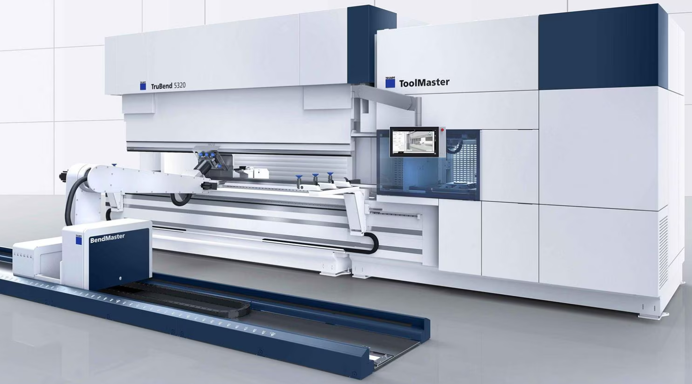

BendMaster CAM
TecZone에는 BendMaster™ 벤딩 셀에 대한 벤딩 프로그램을 생성할 수 있는 로봇 벤딩 CAM 시스템이 포함되어 있습니다. 이 기능은 수동 프레스 브레이크를 프로그래밍하기 위해 TecZone에 탑재된 Bend CAM 기능을 기반으로 구축되므로, 계속 진행하기 전에 매뉴얼의 해당 섹션을 읽어 보는 것이 좋습니다.

수동 프레스 브레이크에 제공되는 기능 외에도, TecZone Bend에는 솔루션을 계산할 때 다음과 같은 BendMaster 특정 작업도 포함됩니다:
BendMaster 시뮬레이션
BendMaster 솔루션을 계산하는 단계는 수동 프레스 브레이크 솔루션을 계산하는 단계와 동일합니다: 파트를 열고 B를 눌러 [1]을 계산합니다.

솔루션이 계산되면, BendMaster 솔루션의 전체 표현이 표시됩니다. 표준 프레스 브레이크 부품 외에도 다음 항목도 클릭만 하면 바로 볼 수 있고 직접 편집할 수 있습니다:
-
BendMaster 로봇
-
석션컵 그리퍼/기계식 그리퍼
-
픽업 팔레트
-
하적 팔레트
-
파지 스테이션
계산되는 솔루션에는 블랭크를 집어 올리는 것부터 완제품을 아웃풋 팔레트에 놓는 것까지 로봇의 모든 경로에 대한 전체 BendMaster 시뮬레이션이 포함됩니다. 이 경로의 모든 단계는 충돌점검 을 거치며, 로봇의 도달 가능성 이 검증됩니다.
솔루션을 편집할 때 이러한 점검은 실시간으로 즉시 수행되므로, 충돌점검을 _요청_할 필요가 없습니다. 솔루션을 편집할 때마다 즉시 적용되며, 결과는 상단의 네비게이터 그리드에 업데이트됩니다.
1. 이는 가장 최근에 사용된 프레스 브레이크에 대한 벤딩 솔루션을 계산합니다. 다른 벤딩 머신 (또는 BendMaster 머신)이 필요한 경우 문서 탭에서 기계 이름을 클릭하고 다른 기계를 선택합니다.